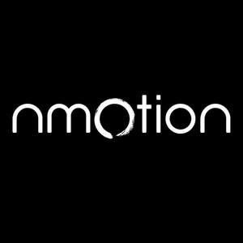
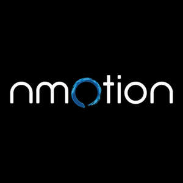

Trade Mark Journal No.2025/019 9 May 2025
UK00004194827 25 April 2025 (41)
Mark 1
Mark 2
Mark 3

Mark 4

- Class 41
- Personal coaching [training]; Personal training services; Personal development training; Personal trainer services [fitness training]; Personal fitness training services; Personal trainer services; Provision of training courses in personal development; Training; Personal development courses; Physical fitness assessment services for training purposes; Life coaching (training); Training and further training consultancy; Consultancy relating to physical fitness training; Physical fitness training services; Practical training; Education and training; Practical training services; Physical training services; Fitness training services; Conducting training sessions on physical fitness online; Vocational education relating to personal safety; Training or education services in the field of life coaching; Coaching [training]; Exercise [fitness] training services; Fitness and exercise training services; Training services relating to fitness; Educational and training services; Training services; Health and fitness training; Training and education services; Education and training services; Instructional and training services; Educational and training services relating to sport; Training and instruction; Meditation training; Instruction in weight training; Training related to nutrition; Conducting training courses relating to nutrition online; Gymnasium services relating to weight training; Training (Practical -) [demonstration]; Practical training [demonstration]; Provision of training and education; Training in yoga; Sports training.
NMOTION LIMITED